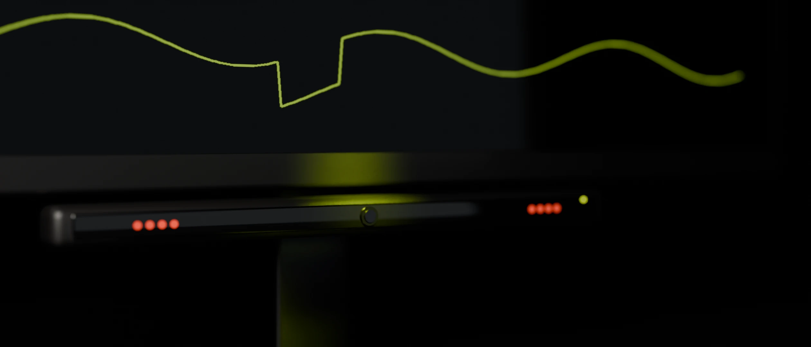

Registro en vivo — sesión de medición biométrica
La intuición no se mide. La atención, sí.
Eye tracking, facial coding y respuesta galvánica, cruzados con modelos de IA propios, para convertir reacciones no conscientes en una decisión validada antes de construir.
01 · Señal no consciente
Lo que
no se dice
sí se mide.
Una encuesta recoge lo que la persona cree que siente. La mirada, el gesto y la piel registran lo que realmente pasa, antes de que lo pueda explicar.

02 · Tecnología
Tres señales que no dependen de lo que se declara.
Eye tracking, facial coding y respuesta galvánica, cruzados con modelos de IA propios, para convertir reacciones no conscientes en una decisión validada antes de construir.

03 · Eye tracking + IA
Así mira tu cliente
Combinamos eye tracking e IA para revelar qué capta la mirada, cuánto tiempo la retiene y qué pasa desapercibido. Los consumidores deciden en segundos, y la mayoría de esas decisiones ocurre antes de que puedan explicarlas. Por eso no preguntamos qué les gusta: medimos cómo reaccionan.
- 01FijacionesCada punto es una pausa de la mirada, numerada en el orden real.
- 02ScanpathEl recorrido que une las fijaciones: cómo se lee la pieza.
- 03HeatmapLa atención acumulada del panel completo sobre la pieza.
- 04Zonas ciegasLo que nadie miró. Lo que hoy no está trabajando.

Analizamos tu packaging, logo, aviso o sitio web para mostrarte con datos dónde se concentra la atención y qué elementos necesitan ajustes antes de salir al mercado.
04 · Inteligencia biométrica
Tu packaging tiene una mirada para ganar.
Mira lo que tus compradores realmente observan antes de comprar.
Lectura de demostración · eye tracking sobre packaging

Eye tracking·Respuesta GSR·Facial coding
05 · Caso
Un packaging, tres versiones, una respuesta clara.
Marca anonimizada.
Representación ilustrativa.


+ respuesta emocional positiva

Desafío
El equipo de marketing debía elegir entre tres propuestas de packaging sin acuerdo interno.
Aplicación
Expusimos las tres versiones a consumidores reales en punto de venta simulado, midiendo mirada y emoción.
Resultado
Una versión generó mayor atención sostenida y respuesta emocional positiva, resolviendo el debate con datos.
06 · Ética y datos
Medimos reacciones. Con reglas claras.
Una señal biométrica es un dato sensible. Por eso cada estudio parte con consentimiento informado, usa solo los datos necesarios y entrega resultados agregados, no perfiles individuales.
Protocolo Lo que cumplimos
- C·01Consentimiento que se entiendeOK
- C·02Acceso restringido y datos separados de la identidadOK
- C·03Revisión legal de cada proyecto según su jurisdicciónOK
- C·04Derecho a salir, siempreOK
Líneas rojas Lo que no hacemos
- R·01No vendemos datosBloqueado
- R·02No perfilamos individuosBloqueado
- R·03No diseñamos manipulaciónBloqueado
- R·04No medimos a menores sin resguardoBloqueado
Las obligaciones legales dependen del tipo de estudio, los datos tratados, la ubicación de los participantes y la jurisdicción aplicable. Recomendamos revisar cada proyecto con asesoría legal especializada. Mencionar la Ley 21.719 no constituye una certificación de cumplimiento.
07 · Diagnóstico
¿Construimos tu próxima decisión con evidencia?
Cuéntanos qué quieres evaluar: una marca, una campaña, un packaging o un sitio web. Revisamos el desafío y te proponemos el método adecuado.
Agendar diagnóstico